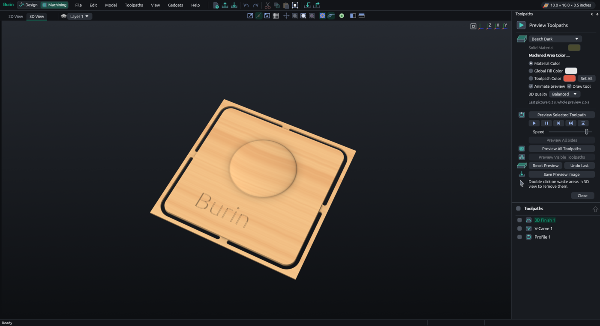
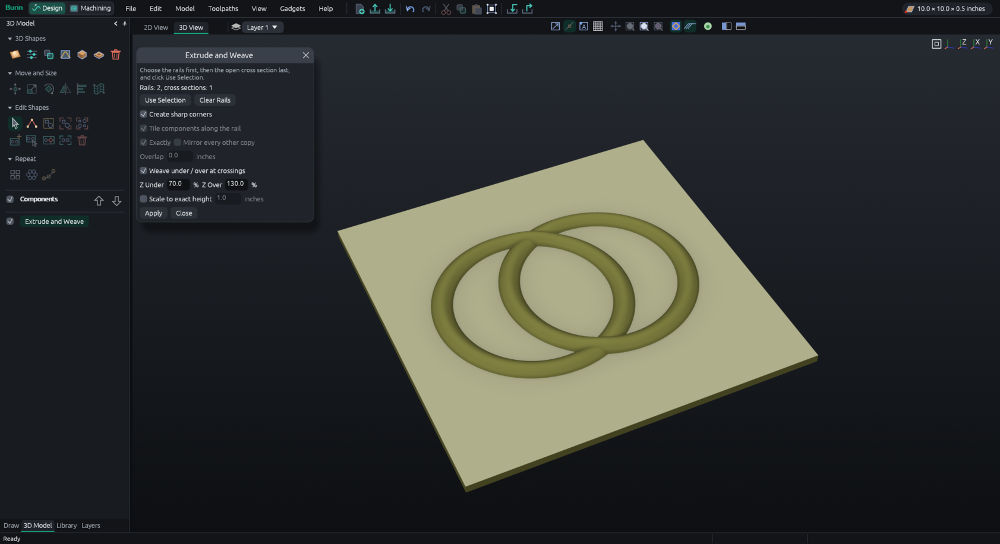
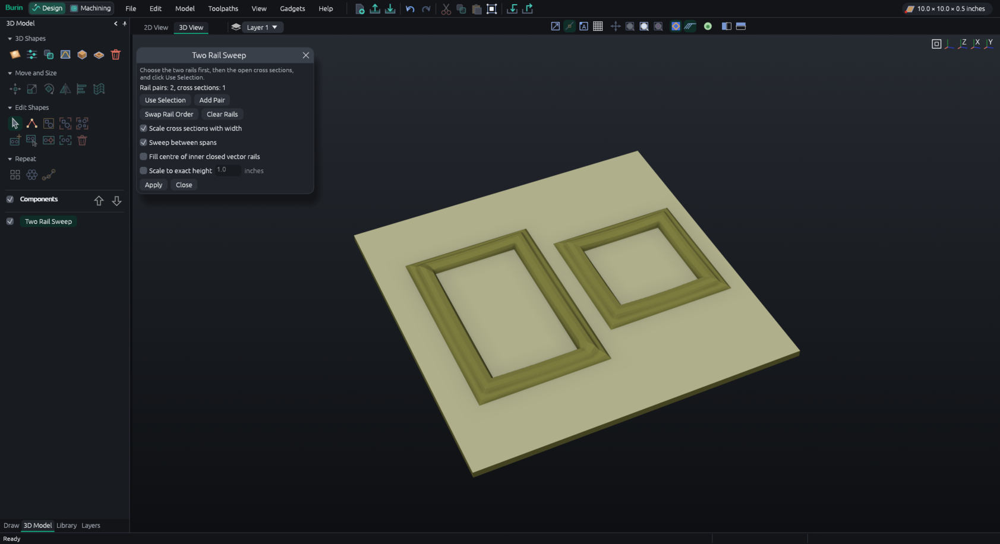
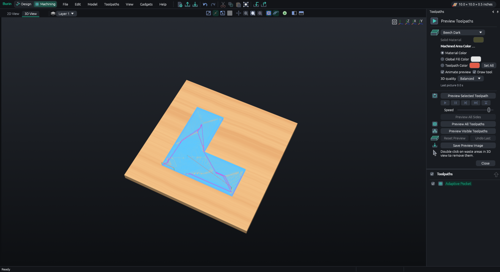
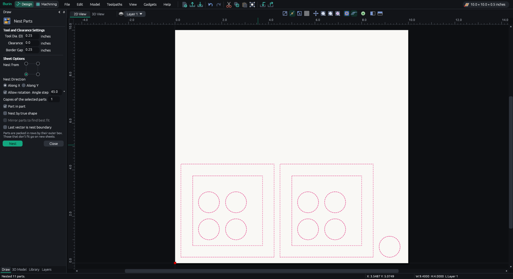
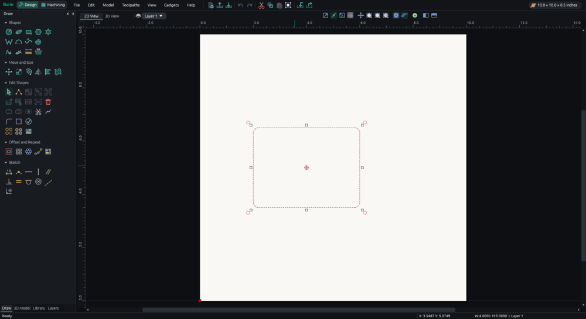
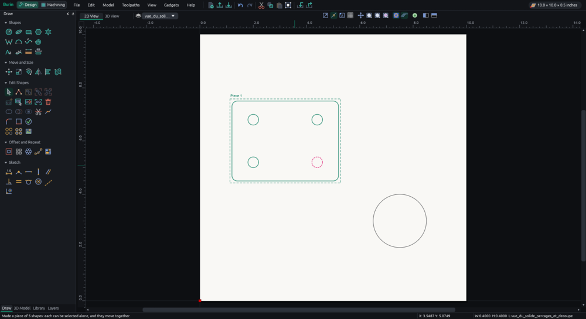
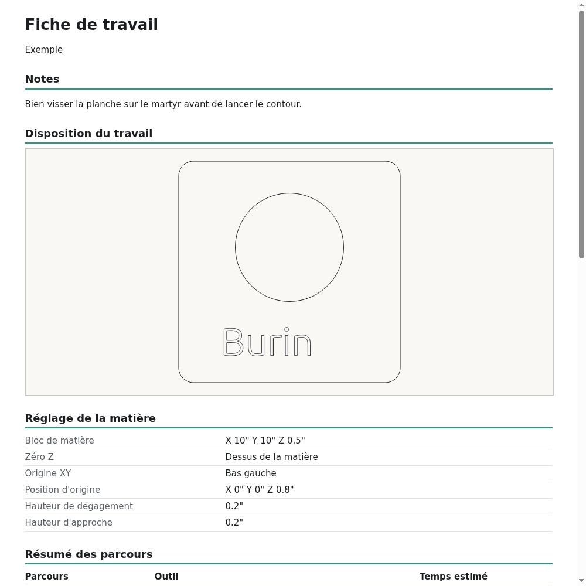
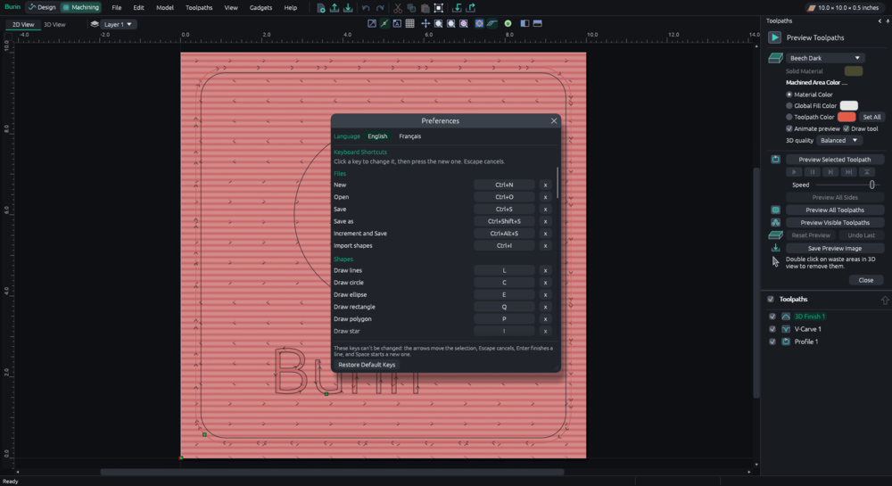

Draw
Lines, curves, circles, polygons, stars, text with your computer's fonts or single-line fonts for engraving, dimensions and constraints.
 Burin
Burin
Design it, then carve it.
Draw your parts, prepare the toolpaths and write the file your CNC machine reads. In English or French, on Windows, Linux or in your browser.

Burin has never driven a real machine yet. Check every file in a simulator, then run it in the air, with the bit well above the material, before you cut.
Set the size of your board, then draw shapes and text, or open an SVG, DXF or .crv3d file.
Pick a bit and a toolpath: cut out, pocket, engrave or carve in 3D. The 3D preview shows the result in wood before you cut.
Choose your machine's controller and save the G-code. Check it, run it in the air, then cut.
Lines, curves, circles, polygons, stars, text with your computer's fonts or single-line fonts for engraving, dimensions and constraints.
Components, reliefs from pictures or STL, sculpting, emboss, two-rail sweep, extrude and weave.
Profile, pocket, drilling, engraving, V-carving, 3D roughing and finishing, with ramps, leads, tabs and adaptive clearing.
Several sheets per job. Parts are laid out in rows or by their true shape, turned, put in the holes of bigger ones, or fitted in an outline.
A 3D preview of the cut, the machining time, a check before cutting and a job sheet to print.
G-code for GRBL, Mach3, LinuxCNC, PlanetCNC or your own post processors. Opens .crv3d projects, SVG, DXF and STL.
Click a picture to see it full size.








Version 0.9.4. One file, nothing to install.
Download, then double-click. Windows may warn that the program isn't signed: click "More info", then "Run anyway".
Download for WindowsDownload, allow it to run (right click, Properties, "Allow executing"), then double-click. Help > Add to Applications Menu puts it in your menu.
Download for LinuxRuns in the page: nothing is installed and nothing leaves your computer. Saving downloads the file.
Open in the browserYes. Burin is free software under the GNU GPL: you can use it, share it and change it, with no account, no subscription and no advertising.
Burin writes G-code for GRBL, Mach3, LinuxCNC and PlanetCNC controllers, and for others through post processor files (.pp). It doesn't drive the machine itself: you open the saved file in your machine's control program.
Yes: Burin reads .crv3d files, with their shapes, toolpaths, guides, grid and notes. Some 3D parts of a project aren't read yet. It also opens SVG, DXF, STL and pictures.
Burin hasn't been tried on a real machine yet, so treat every file as untested: check it in a simulator, run it in the air with the bit well above the material, and keep a hand near the emergency stop.
No. The Windows and Linux programs work fully offline. The browser version needs the internet to load once, then everything is computed in the page.
In Burin, Help > Send Feedback opens a draft you can read before sending; your work and file names are never in it. You can also open an issue on GitHub.